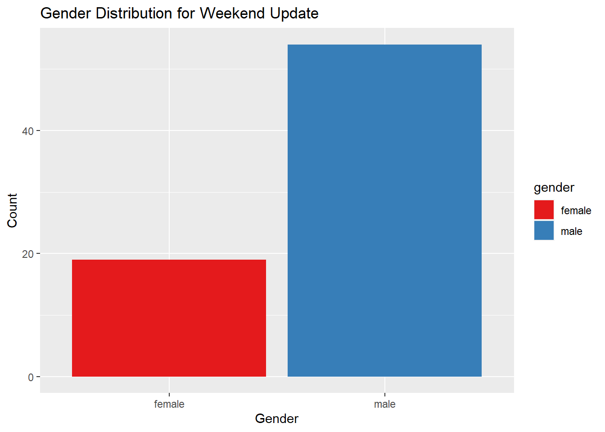
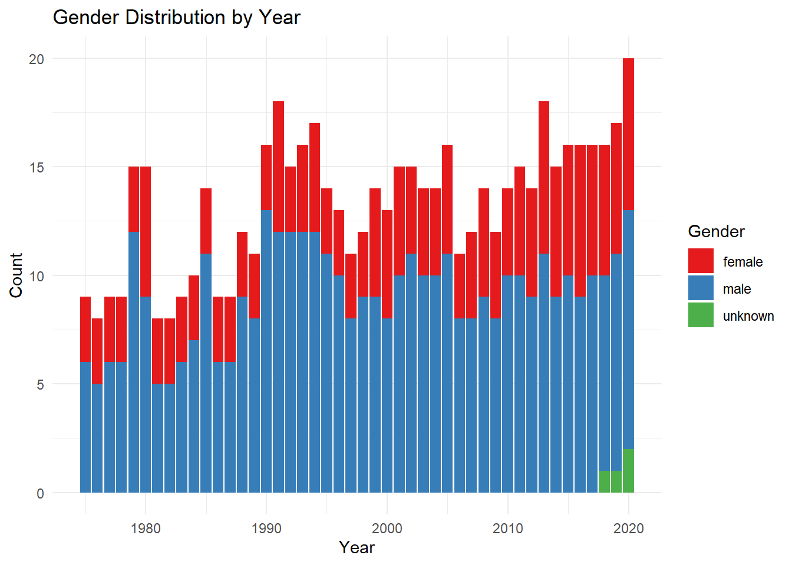

library(tidyverse)
library(ggplot2)
knitr::opts_chunk$set(echo = TRUE, warning=FALSE, message=FALSE)Challenge 8
challenge_8
Shaunak Padhye
snl
Joining Data
Read in data
For this challenge I will be using the following dataset.
- snl ⭐⭐⭐⭐⭐
snl_casts <- read_csv("_data/snl_casts.csv", skip = 1, col_names = c("aid", "sid", "featured", "cast_first_epid", "cast_last_epid", "update_anchor", "cast_n_epid", "season_fraction"))
snl_actors <- read_csv("_data/snl_actors.csv")
snl_seasons <- read_csv("_data/snl_seasons.csv", skip = 1, col_names = c("sid", "year", "seasons_first_epid", "seasons_last_epid", "seasons_n_epid"))Briefly describe the data
This dataset contains three different dataframes:
snl_actors: The actors dataframe contains details of the cast of people who have appeared in SNL from 1975 to 2020.
snl_casts: The casts dataframe contains details of the cast for various seasons of SNL.
snl_seasons: The seasons dataframe contains details of each season from 1975 to 2020.
Tidy Data (as needed)
Lets look what dataframes we have.
head(snl_actors)# A tibble: 6 × 4
aid url type gender
<chr> <chr> <chr> <chr>
1 Kate McKinnon /Cast/?KaMc cast female
2 Alex Moffat /Cast/?AlMo cast male
3 Ego Nwodim /Cast/?EgNw cast unknown
4 Chris Redd /Cast/?ChRe cast male
5 Kenan Thompson /Cast/?KeTh cast male
6 Carey Mulligan /Guests/?3677 guest andy We can remove the url column for our analysis.
snl_actors <- snl_actors %>% select(-url)
str(snl_actors)tibble [2,306 × 3] (S3: tbl_df/tbl/data.frame)
$ aid : chr [1:2306] "Kate McKinnon" "Alex Moffat" "Ego Nwodim" "Chris Redd" ...
$ type : chr [1:2306] "cast" "cast" "cast" "cast" ...
$ gender: chr [1:2306] "female" "male" "unknown" "male" ...Lets look at the casts dataframe:
head(snl_casts)# A tibble: 6 × 8
aid sid featured cast_first_epid cast_last_epid update_anchor cast_n_epid
<chr> <dbl> <lgl> <dbl> <dbl> <lgl> <dbl>
1 A. Wh… 11 TRUE 19860222 NA FALSE 8
2 A. Wh… 12 TRUE NA NA FALSE 20
3 A. Wh… 13 TRUE NA NA FALSE 13
4 A. Wh… 14 TRUE NA NA FALSE 20
5 A. Wh… 15 TRUE NA NA FALSE 20
6 A. Wh… 16 TRUE NA NA FALSE 20
# ℹ 1 more variable: season_fraction <dbl>summary(snl_casts) aid sid featured cast_first_epid
Length:614 Min. : 1.00 Mode :logical Min. :19770115
Class :character 1st Qu.:15.00 FALSE:451 1st Qu.:19801215
Mode :character Median :26.00 TRUE :163 Median :19901110
Mean :25.47 Mean :19909634
3rd Qu.:37.00 3rd Qu.:19957839
Max. :46.00 Max. :20141025
NA's :564
cast_last_epid update_anchor cast_n_epid season_fraction
Min. :19751011 Mode :logical Min. : 1.00 Min. :0.04167
1st Qu.:19850112 FALSE:541 1st Qu.:19.00 1st Qu.:1.00000
Median :19950225 TRUE :73 Median :20.00 Median :1.00000
Mean :19944038 Mean :18.73 Mean :0.94827
3rd Qu.:20040117 3rd Qu.:21.00 3rd Qu.:1.00000
Max. :20140201 Max. :24.00 Max. :1.00000
NA's :597 Finally we take a look at the seasons data.
head(snl_seasons)# A tibble: 6 × 5
sid year seasons_first_epid seasons_last_epid seasons_n_epid
<dbl> <dbl> <dbl> <dbl> <dbl>
1 1 1975 19751011 19760731 24
2 2 1976 19760918 19770521 22
3 3 1977 19770924 19780520 20
4 4 1978 19781007 19790526 20
5 5 1979 19791013 19800524 20
6 6 1980 19801115 19810411 13summary(snl_seasons) sid year seasons_first_epid seasons_last_epid
Min. : 1.00 Min. :1975 Min. :19751011 Min. :19760731
1st Qu.:12.25 1st Qu.:1986 1st Qu.:19863512 1st Qu.:19872949
Median :23.50 Median :1998 Median :19975926 Median :19985512
Mean :23.50 Mean :1998 Mean :19975965 Mean :19985509
3rd Qu.:34.75 3rd Qu.:2009 3rd Qu.:20088423 3rd Qu.:20098015
Max. :46.00 Max. :2020 Max. :20201003 Max. :20210410
seasons_n_epid
Min. :12.0
1st Qu.:20.0
Median :20.0
Mean :19.7
3rd Qu.:21.0
Max. :24.0 Join Data
Now we will join the dataframes:
snl_castsseasons <- left_join(snl_casts, snl_seasons, by = "sid")
snl_data <- left_join(snl_castsseasons, snl_actors, "aid")
glimpse(snl_data)Rows: 614
Columns: 14
$ aid <chr> "A. Whitney Brown", "A. Whitney Brown", "A. Whitney…
$ sid <dbl> 11, 12, 13, 14, 15, 16, 5, 39, 40, 41, 42, 45, 46, …
$ featured <lgl> TRUE, TRUE, TRUE, TRUE, TRUE, TRUE, TRUE, TRUE, TRU…
$ cast_first_epid <dbl> 19860222, NA, NA, NA, NA, NA, 19800409, 20140118, N…
$ cast_last_epid <dbl> NA, NA, NA, NA, NA, NA, NA, NA, NA, NA, NA, NA, NA,…
$ update_anchor <lgl> FALSE, FALSE, FALSE, FALSE, FALSE, FALSE, FALSE, FA…
$ cast_n_epid <dbl> 8, 20, 13, 20, 20, 20, 5, 11, 21, 21, 21, 18, 17, 2…
$ season_fraction <dbl> 0.4444444, 1.0000000, 1.0000000, 1.0000000, 1.00000…
$ year <dbl> 1985, 1986, 1987, 1988, 1989, 1990, 1979, 2013, 201…
$ seasons_first_epid <dbl> 19851109, 19861011, 19871017, 19881008, 19890930, 1…
$ seasons_last_epid <dbl> 19860524, 19870523, 19880227, 19890520, 19900519, 1…
$ seasons_n_epid <dbl> 18, 20, 13, 20, 20, 20, 20, 21, 21, 21, 21, 18, 17,…
$ type <chr> "cast", "cast", "cast", "cast", "cast", "cast", "ca…
$ gender <chr> "male", "male", "male", "male", "male", "male", "ma…Data Exploration
We can see the distribution of gender for the cast member who have been Weekend Update Anchors.
snl_data %>%
filter(update_anchor == TRUE) %>%
ggplot(aes(x = gender, fill = gender)) +
geom_bar() +
xlab("Gender") +
ylab("Count") +
ggtitle("Gender Distribution for Weekend Update") +
scale_fill_brewer(palette = "Set1")
We can see from the above graph that SNL has cast more Male cast members over female cast members as the Weekend Update Anchor.
It will be interesting to see the gender distribution of cast members over the years.
snl_data %>%
group_by(year, gender) %>%
summarise(count = n()) %>%
ggplot(aes(x = year, y = count, fill = gender)) +
geom_bar(stat = "identity", position = "stack") +
labs(x = "Year", y = "Count", fill = "Gender") +
ggtitle("Gender Distribution by Year") +
scale_fill_brewer(palette = "Set1") +
theme_minimal()
The percentage of female cast members has increased over the years. However, SNL still tends to cast more male actors than female.